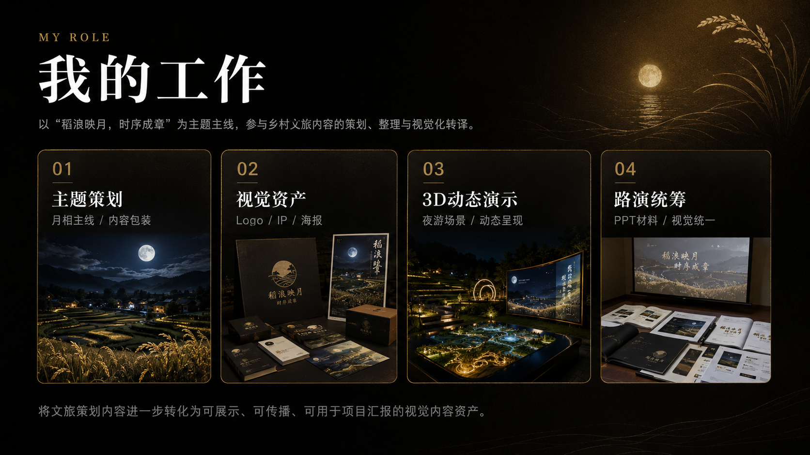
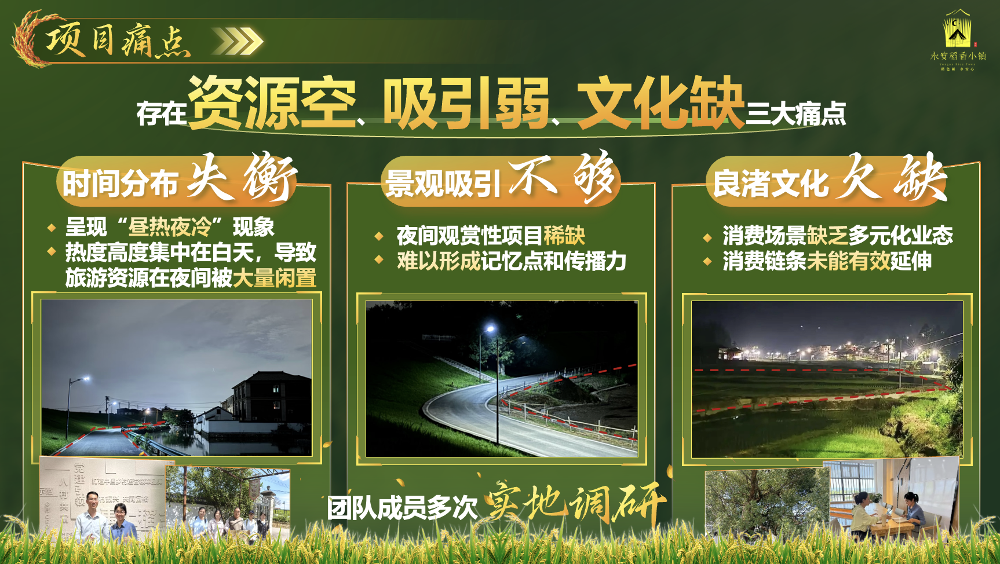
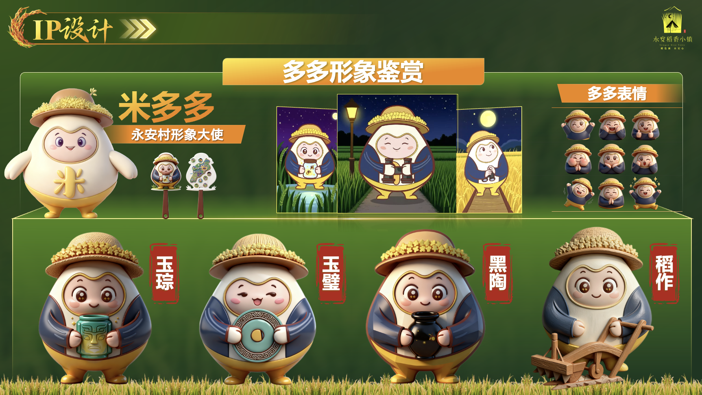
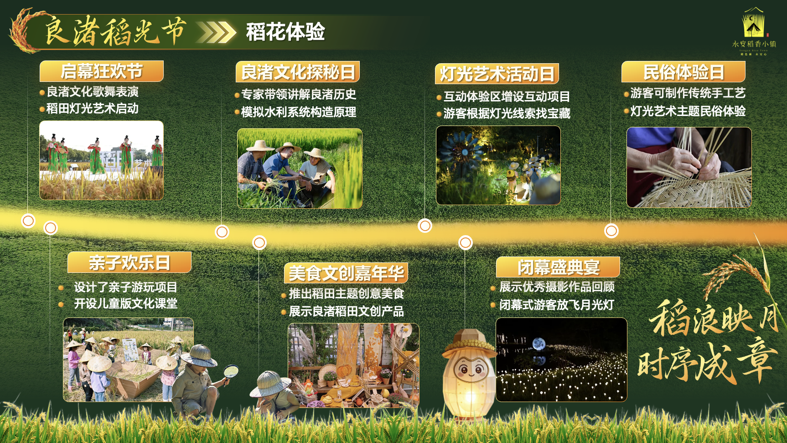
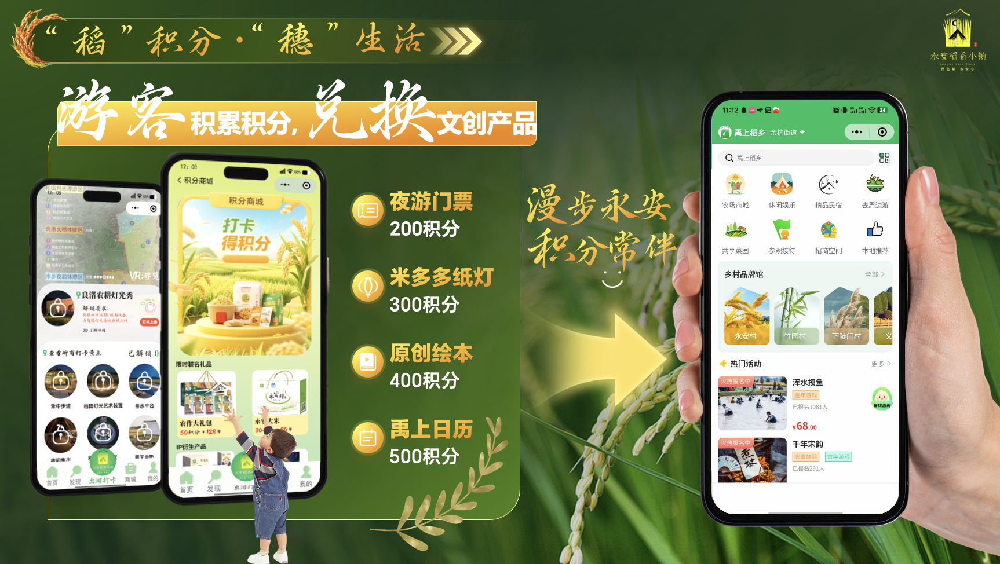
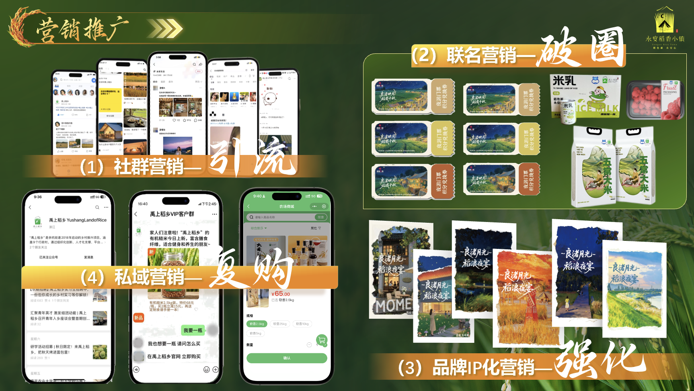
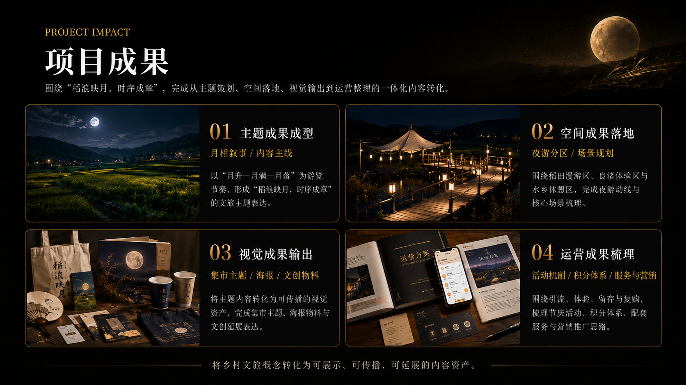

Logo 再创
原 Logo → 夜游主题强化，融入滨水、帐篷与夜色元素。
YONGAN VILLAGE CASE REVIEW
永安稻香小镇“月相三部曲”主题
围绕“月相三部曲”主题，构建乡村夜游 IP、3D 动态演示与文旅传播内容资产。

我的工作图片位assets/yongan-my-role.pngPROJECT INSIGHT

项目痛点图片位assets/yongan-pain-point.pngCORE CONCEPT
3D MOTION DEMO
VISUAL IDENTITY
原 Logo → 夜游主题强化，融入滨水、帐篷与夜色元素。

IP 形象图片位assets/yongan-ip-design.png永安村形象大使，延展表情、动作与文创传播资产。
SCENE DESIGN
OPERATION SYSTEM
启幕狂欢节 / 良渚文化探秘日 / 民俗体验日 / 美食文创嘉年华

节庆活动图片位assets/yongan-operation-activity.png稻积分 / 穗生活 / 文创兑换 / 游客留存

积分体系图片位assets/yongan-operation-points.png夜游专线 / 智慧停车 / 摊位共享 / 民宿共建
社群营销 / 联名营销 / 品牌 IP 化 / 私域复购

营销推广图片位assets/yongan-operation-marketing.png
项目成果图片位assets/yongan-final-assets.png